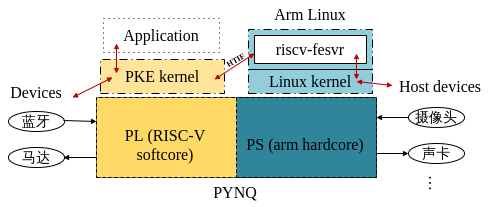
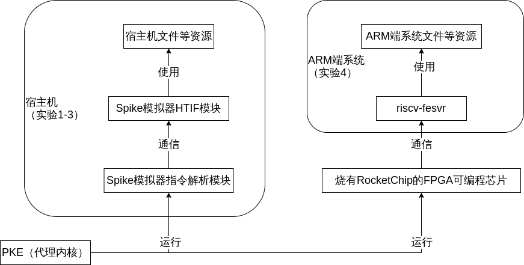
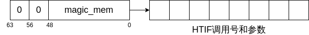
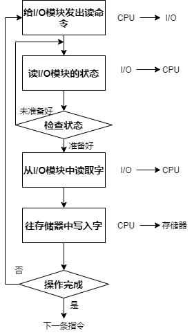
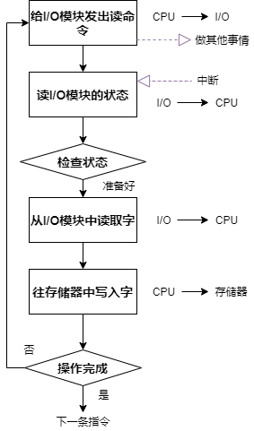
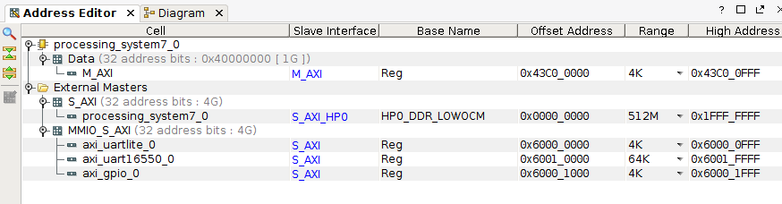

第六章．实验4：设备管理（基于RISCV-on-PYNQ）
目录
- 6.1 实验4的基础知识
- 6.1.1 pynq开发板介绍
- 6.1.2 设备树
- 6.1.3 内存映射I/O(MMIO)
- 6.1.4 riscv-fesvr原理
- 6.1.5 轮询I/O控制方式
- 6.1.6 中断驱动I/O控制方式
- 6.1.7 设备文件
- 6.2 lab4_1 POLL
- 给定应用
- 实验内容
- 实验指导
- 6.3 lab4_2_PLIC
- 给定应用
- 实验内容
- 实验指导
- 6.4 lab4_3_hostdevice
- 给定应用
- 实验内容
- 实验指导
6.1 实验4的基础知识
完成前面所有实验后，PKE内核的整体功能已经得到完善。在实验四的设备实验中，我们将结合fpga-pynq板，在rocket chip上增加uart模块和蓝牙模块，并搭载PKE内核，实现蓝牙通信控制智能小车，设计设备管理的相关实验。
6.1.1 pynq开发板介绍
本实验中，我们所使用的pynq-z2开发板上搭载两块芯片，一块为Arm架构32位芯片，称为PS端，我们能在上面运行Ubuntu；另一块为FPGA可编程芯片，称为PL端，通过烧录Rocket chip电路，使它能够运行Riscv架构的操作系统，即riscv-pke。

如上图，在开发板上运行的时候，PKE在PL端运行，一方面它可以通过Rocket Chip电路的连线访问PL端的设备（device），如蓝牙、小车电机等；另一方面，在PS端运行的riscv-fesvr程序可以和PKE通过HTIF协议通信，使得PKE可以读写PS端Linux操作系统下的设备文件（host device），比如摄像头、声卡等。也就是说，PKE除了可以访问本身的设备，还可以利用PS端操作系统的功能访问更复杂的设备，这就是代理内核的特点。
实验四和前三个实验的关系如下：

可见除了部分硬件相关的操作外，PKE在Spike和开发板上的运行是完全等价的，代理内核一方面让我们可以用最简单的方法访问两端的设备，另一方面在不同地方运行基本不用改太多代码，非常优越。
6.1.2 设备树
设备树（Device Tree）是描述计算机的特定硬件设备信息的数据结构，以便于操作系统的内核可以管理和使用这些硬件，包括CPU，内存，总线和其他一些外设。
硬件的相应信息都会写在.dts为后缀的文件中，该文件经过dtc程序编译之后会得到dtb文件，在传统内核中dtb通过Bootloader引导程序加载到内核，所以Bootloader和内核都需要支持设备树才行。
在本章节中，dtb文件会和rocketchip一起编译进电路，存放在固定内存区域中。PKE可以访问这个内存区域把该文件解析为设备树结构，设备即通过设备树的方式提供给PKE使用。
6.1.3 内存映射I/O(MMIO)
内存映射(Memory-Mapping I/O)是一种用于设备驱动程序和设备通信的方式，它区别于基于I/O端口控制的Port I/O方式。RICSV指令系统的CPU通常只实现一个物理地址空间，这种情况下，外设I/O端口的物理地址就被映射到CPU中单一的物理地址空间，成为内存的一部分，CPU可以像访问一个内存单元那样访问外设I/O端口，而不需要设立专门的外设I/O指令。
在MMIO中，内存和I/O设备共享同一个地址空间。MMIO是应用得最为广泛的一种IO方法，它使用相同的地址总线来处理内存和I/O设备，I/O设备的内存和寄存器被映射到与之相关联的地址。当CPU访问某个内存地址时，它可能是物理内存，也可以是某个I/O设备的内存。此时，用于访问内存的CPU指令就可以用来访问I/O设备。每个I/O设备监视CPU的地址总线，一旦CPU访问分配给它的地址，它就做出响应，将数据总线连接到需要访问的设备硬件寄存器。为了容纳I/O设备，CPU必须预留给I/O一个地址映射区域。
在本章节中，修改后的RocketChip将蓝牙控制寄存器和小车电机端接到固定的内存地址，因此可以通过对这些地址进行读写控制蓝牙和小车电机。
6.1.4 riscv-fesvr原理
riscv-fesvr是PKE在PYNQ开发板上使用的重要工具，它是ARM端系统上运行的程序，控制PKE的启动。除了启动功能，riscv-fesvr程序主要分为两个模块，系统调用模块块负责接受PKE对ARM端的系统调用请求，在ARM端执行这些函数；内存模块负责读写RISCV端的内存，和PKE交换数据。
PKE调用宿主机/开发板ARM端的系统调用函数使用的是HTIF协议。协议要求内核保留两个地址，作为和riscv-fesvr共享数据的地方。PKE要使用系统调用函数，就需要将系统调用函数的编号和参数通过这个地址发送给riscv-fesvr，方法是定义一个数组magic_mem，该数组存储了调用号和参数，再将数组的起始地址按一定的格式填入这个地址中，如下图。

打个比方，我通过HTIF协议调用ARM端的write函数，那么我先定义一个数组magic_mem，magic_mem[0]为write的系统调用号，magic_mem[1]为文件描述符，magic_mem[2]为缓冲区地址，magic_mem[3]为写入长度。然后把一个数写入共享地址，这个数高8位和中间8位都是0，低48位为magic_mem的地址。riscv-fesvr会首先读出magic_mem里的数据，然后根据magic_mem[0]决定要调用write函数，这时需要注意magic_mem[2]里的缓冲区地址是RISCV端内存的地址，所以先把RISCV端内存里的这段数据读到外面内存，再以外面内存地址为参数调用write函数。
riscv-fesvr的内存模块用来读写RISCV端的内存，从而可以读取系统调用参数以及读写PKE的缓冲区。Pynq开发板把RISCV端的内存抽象成设备文件/dev/mem，所以内存模块可以通过在固定偏移量读写该文件，从而实现读写内存。
另外，控制摄像头需要用到的ioctl、mmap、munmap三个系统调用函数是原版的riscv-fesvr不支持的，所以我们对riscv-fesvr的系统调用模块进行了修改：
- ioctl函数比较简单，可以直接用PKE传过来的参数调用系统调用函数
- mmap函数比较麻烦，因为ARM端通过mmap映射的是ARM端的内存，RISCV端无法访问。所以再添加readmmap函数，PKE可以通过HTIF调用此函数读取ARM端被映射的内存。将ARM端用mmap映射的所有内存用数组存储映射地址，返回给PKE数组索引；PKE向readmmap传入索引，riscv-fesvr根据索引找到地址，读取ARM端的内存数据返回给PKE。
6.1.5 轮询I/O控制方式
在实验四中，我们设备管理的主要任务是控制设备与内存的数据传递，具体为从蓝牙设备读取到用户输入的指令字符（或传递数据给蓝牙在手机端进行打印），解析为小车前、后、左、右、停止等动作来传输数据给电机实现对小车的控制。在前两个实验中，我们分别需要对轮询控制方式和中断控制方式进行实现。
首先，程序直接控制方式（又称循环测试方式），每次从外部设备读取一个字的数据到存储器，对于读入的每个字，CPU需要对外设状态进行循环检查，直到确定该数据已经传入I/O数据寄存器中。
轮询I/O控制方式流程如图：

6.1.6 中断驱动I/O控制方式
在前一种轮询的控制方式中，由于CPU的高速性和I/O设备的低速性，导致CPU浪费绝大多数时间处于等待I/O设备完成数据传输的循环测试中，会造成大量资源浪费。中断驱动的方式是，允许请求I/O的进程在设备工作时进入休眠状态，使CPU能够运行别的进程。直到设备工作完成时，再由设备发出中断，中断处理程序唤醒之前休眠的进程，使其能够接受设备返回的数据继续执行。采用中断驱动的控制方式，在I/O操作过程中，CPU可以执行其他的进程，CPU与设备之间达到了部分并行的工作状态，从而提升了资源利用率。
Riscv包含三类中断：软中断、时钟中断和外部中断。软中断和时钟中断我们在实验一已经接触过，而设备触发的中断属于外部中断。在实验一中，我们在机器态捕获了时钟中断，然后将其转发成内核态的软中断交由中断处理程序处理；本章则直接通过设置MIDELEG寄存器，利用RISCV的中断委托机制直接将外部中断交由内核态的中断处理程序处理，不用经过机器态的捕获。另外，RISCV架构还指定了PLIC（Priority Level Interrupt Controller）模块管理各级中断，该设备使用MMIO控制，PKE在处理中断之后通过读写指定的内存地址，来获取触发中断的设备的编号以及通知PLIC本次中断是否处理成功。
中断驱动I/O方式流程如图：

6.1.7 设备文件
用户程序访问外部设备通常有两种方式：通过特定系统调用访问和通过设备文件访问。前者即操作系统提供专门的函数控制设备，后者是操作系统把设备指定成一个文件，通过通用的文件的读写函数控制设备。设备文件常用的函数除了open、read、write、close，还有以下几种：
- ioctl：
int ioctl(int fd, unsigned long request, void *data);用来设置设备参数。fd是文件描述符；request是一个常数，表示参数类型，不同的类型对应不同的常数；data通常是一个指向要设置的参数的值的指针，参数的值可以是整数，也可以是结构体等；返回值为该函数是否执行成功。如摄像头设备，我们就可以通过该函数设置摄像头的拍摄分辨率、颜色格式等；音频设备我们可以设置采样率、数据格式等。 - mmap：
void *mmap(void *addr, size_t length, int prot, int flags, int fd, off_t offset);该函数原本的作用是将虚拟地址和文件进行映射，使得读写文件可以像读写内存一样方便，同时也能节省物理内存；但对于有些不支持read/write读写的设备，就必须使用mmap函数将虚拟地址和设备文件映射，才能读写设备的数据。addr参数表示映射的起始虚拟地址，通常填NULL表示由操作系统自己指定；length，prot、flags分别表示映射地址空间的长度、权限和其他参数；fd为文件描述符；offset为文件偏移量，返回值为映射的起始虚拟地址。
在本章节中，将使用PKE通过HTIF协议和PS端的riscv-fesvr进行通信，以读写PS端的摄像头设备文件，进而控制摄像头设备。
6.2 lab4_1 poll
给定应用
- user/app_poll.c
1 /*
2 * Below is the given application for lab4_1.
3 * The goal of this app is to control the car via Bluetooth.
4 */
5
6 #include "user_lib.h"
7 #include "util/types.h"
8
9 int main(void) {
10 printu("please input the instruction through bluetooth!\n");
11 while(1)
12 {
13 char temp = (char)uartgetchar();
14 uartputchar(temp);
15 switch (temp)
16 {
17 case '1' : gpio_reg_write(0x2e); break; //前进
18 case '2' : gpio_reg_write(0xd1); break; //后退
19 case '3' : gpio_reg_write(0x63); break; //左转
20 case '4' : gpio_reg_write(0x9c); break; //右转
21 case 'q' : exit(0); break;
22 default : gpio_reg_write(0x00); break; //停止
23 }
24 }
25 exit(0);
26 return 0;
27 }
应用通过轮询的方式从蓝牙端获取指令，实现对小车的控制功能。
从直接编译运行结果上来看，蓝牙端端口获取用户输入指令的uartgetchar系统调用未完善，所以无法进行控制小车的后续操作。按照提示，我们需要实现蓝牙uart端口的获取和打印字符系统调用，以及传送驱动数据给小车电机的系统调用，实现对小车的控制。
实验内容
如输出提示所表示的那样，需要找到并完成对uart_getchar的调用，由于本实验给出的基础代码修改了硬件相关的部分代码，所以无法在Spike上运行，需在PYNQ开发板上进行验证，运行步骤如下：
- 依照仓库https://gitee.com/hustos/fpga-pynq下usb-device-pynq分支的说明，在板上安装ARM端操作系统和下载必要的文件
- 依照仓库https://gitee.com/hustos/myriscv-fesvr的说明，自行编译或直接下载修改后的riscv-fesvr
- 连接外设：首先将蓝牙模块接入pynq板的PMODA接口组，接口对应关系为：
| pynq接口 | 蓝牙接口 |
|---|---|
| VCC | VCC |
| GND | GND |
| JA4 | RXD |
| JA3 | TXD |
接入时注意对应接口错位正确插入，且插入的所有接口均在上面的一排。然后将小车的电机接口接入PMODB接口组，为了防止小车行走过程中接口松开，可自行使用胶布粘贴。

-
在手机端下载任意一种蓝牙串口通信APP，匹配并连接蓝牙模块。蓝牙的名称通常是“HC-两位数字”。使用网线连接开发板和电脑，同时使用USB线连接开发板和电脑或者充电宝，打开开发板电源。
-
执行开机之后必要的操作后（烧录电路等，见步骤1里的仓库），运行：
之后即可在手机上输入控制指令，小车应能根据指令反应。
实验指导
基于实验lab1_1，你已经了解和掌握操作系统中系统调用机制的实现原理。对于本实验的应用，我们发现user/app_poll.c文件中有三个函数调用：uart_getchar，uart_putchar和gpio_reg_write。UART和GPIO分别是两种控制设备的端口协议，但在本实验中它们都可以通过MMIO进行控制。对代码进行跟踪，我们发现这三个函数都在user/user_lib.c中进行了实现，对应于lab1_1的流程，我们可以在kernel/syscall.h中查看新增的系统调用以及编号：
16 #define SYS_user_uart_putchar (SYS_user_base + 6)
17 #define SYS_user_uart_getchar (SYS_user_base + 7)
18 #define SYS_user_gpio_reg_write (SYS_user_base + 8)
继续追踪，我们发现在kernel/syscall.c的do_syscall函数中新增了对应系统调用编号的实现函数，对于新增系统调用，分别有如下函数进行处理：
133 case SYS_user_uart_putchar:
134 sys_user_uart_putchar(a1);return 1;
135 case SYS_user_uart_getchar:
136 return sys_user_uart_getchar();
137 case SYS_user_gpio_reg_write:
138 return sys_user_gpio_reg_write(a1);
读者的任务即为在kernel/syscall.c中追踪并完善sys_user_uart_getchar。对于uart相关的函数，我们给出uart端口的地址映射如图：

我们可以看到配置uart端口的偏移地址为0x60000000，对应写地址为0x60000000，读地址为0x60000004，同时对0x60000008的状态位进行轮询，检测到信号时进行读写操作。
在kernel/syscall.c中找到函数实现空缺，并根据注释完成sys_user_uart_getchar系统调用（由于lab4_2需要对lab4_1完成的代码进行修改，所以这里一并给出了lab4_2的提示）：
95 ssize_t sys_user_uart_getchar() {
96 // TODO (lab4_1 and lab4_2): implment the syscall of sys_user_uart_getchar and modify it in lab4_2.
97 // hint (lab4_1): The functionality of sys_user_uart_getchar is to get data from UART address.
98 // Therefore we should check the data from the address of bluetooth status repeatedly, until the data is ready.
99 // Then read the data from the address of bluetooth reading and return.
100 // hint (lab4_2): the functionality of sys_user_uart_getchar is let process sleep and wait for value. therefore,
101 // we should call do_sleep to let process 0 sleep.
102 // then we should get uartvalue and return.
103 panic( "You have to implement sys_user_uart_getchar to get data from UART using uartgetchar in lab4_1 and modify it in lab4_2.\n" );
104
105 }
注意：编写自己的代码时千万不要修改或删去lab4_2的提示（即100行到102行），防止后面实验的合并错误！
实验完毕后，记得提交修改（命令行中-m后的字符串可自行确定），以便在后续实验中继承lab4_1中所做的工作：
6.3 lab4_2_PLIC
给定应用
- user/app_PLIC.c
1 /*
2 * Below is the given application for lab4_2.
3 * The goal of this app is to control the car via Bluetooth.
4 */
5
6 #include "user_lib.h"
7 #include "util/types.h"
8 void delay(unsigned int time){
9 unsigned int a = 0xfffff ,b = time;
10 volatile unsigned int i,j;
11 for(i = 0; i < a; ++i){
12 for(j = 0; j < b; ++j){
13 ;
14 }
15 }
16 }
17 int main(void) {
18 printu("Hello world!\n");
19 int i;
20 int pid = fork();
21 if(pid == 0)
22 {
23 while (1)
24 {
25 delay(3);
26 printu("waiting for you!\n");
27 }
28
29 }
30 else
31 {
32 for (;;) {
33 char temp = (char)uartgetchar();
34 printu("%c\n", temp);
35 switch (temp)
36 {
37 case '1' : gpio_reg_write(0x2e); break; //前进
38 case '2' : gpio_reg_write(0xd1); break; //后退
39 case '3' : gpio_reg_write(0x63); break; //左转
40 case '4' : gpio_reg_write(0x9c); break; //右转
41 case 'q' : exit(0); break;
42 default : gpio_reg_write(0x00); break; //停止
43 }
44 }
45 }
46
47
48 exit(0);
49
50 return 0;
51 }
应用通过中断的方式从蓝牙端获取指令，实现对小车的控制功能。在等待蓝牙的进程休眠的时候，会执行delay进程，可以看到waiting for you提示信息。
切换到lab4_2，继承lab4_1及之前实验所做的修改，直接编译执行结果和完成后的lab4_1一致，一直阻塞在这里等待蓝牙数据。需要修改lab4_1所写的代码并添加中断处理，使得等待蓝牙的进程能够自动休眠，执行delay进程，直到发生外部中断后才继续执行。
实验内容
如输出提示所表示的那样，需要修改lab4_1所写的代码并添加中断处理。完成后按lab4_1的方法执行，程序在等待蓝牙的时候会不断输出waiting for you提示信息，在手机上输入控制指令后，小车应能根据指令反应。
实验指导
在kernel/syscall.c中找到lab4_1写的代码，并根据注释进行修改：
95 ssize_t sys_user_uart_getchar() {
96 // TODO (lab4_1 and lab4_2): implment the syscall of sys_user_uart_getchar and modify it in lab4_2.
97 // hint (lab4_1): The functionality of sys_user_uart_getchar is to get data from UART address.
98 // Therefore we should check the data from the address of bluetooth status repeatedly, until the data is ready.
99 // Then read the data from the address of bluetooth reading and return.
100 // hint (lab4_2): the functionality of sys_user_uart_getchar is let process sleep and wait for value. therefore,
101 // we should call do_sleep to let process 0 sleep.
102 // then we should get uartvalue and return.
103 panic( "You have to implement sys_user_uart_getchar to get data from UART using uartgetchar in lab4_1 and modify it in lab4_2.\n" ); // 该行已被你之前写的代码替换
104
105 }
当蓝牙有数据发送时，pke会收到外部中断，你需要完成接收到外部中断后的处理。
在kernel/strap.c中找到函数空缺，并根据注释完成中断处理函数：
103 case CAUSE_MEXTERNEL_S_TRAP:
104 {
105 //reset the PLIC so that we can get the next external interrupt.
106 volatile int irq = *(uint32 *)0xc201004L;
107 *(uint32 *)0xc201004L = irq;
108 volatile int *ctrl_reg = (void *)(uintptr_t)0x6000000c;
109 *ctrl_reg = *ctrl_reg | (1 << 4);
110 // TODO (lab4_2): implment the case of CAUSE_MEXTERNEL_S_TRAP.
111 // hint: the case of CAUSE_MEXTERNEL_S_TRAP is to get data from UART address and wake the process. therefore,
112 // and you need to store the data in struct process.value.
113 panic( "You have to implement CAUSE_MEXTERNEL_S_TRAP to get data from UART and wake the process 0 in lab4_2.\n" );
114
115 break;
116 }
实验完毕后，记得提交修改（命令行中-m后的字符串可自行确定），以便在后续实验中继承lab4_2中所做的工作：
6.4 lab4_3_hostdevice
给定应用
- user/app_host_device.c
1 #pragma pack(4) // 设置结构体按4字节对齐，因为PS端是32位，而riscv编译器默认会按64位的8字节对齐
2 #define _SYS__TIMEVAL_H_ // 重载timeval结构体，因为riscv编译器里的timeval两个属性都是8字节和PS端32位系统不同
3 struct timeval {
4 unsigned int tv_sec;
5 unsigned int tv_usec;
6 };
7
8 #include "user_lib.h"
9 #include "videodev2.h"
10 #define DARK 64
11 #define RATIO 7 / 10
12
13 int main() {
14 char *info = allocate_share_page(); // 分配一个共享页，方便父子进程之间传递信息（小车的状态）
15 int pid = do_fork();
16 if (pid == 0) { // 子进程
17 int f = do_open("/dev/video0", O_RDWR), r; // 打开设备文件
18
19 struct v4l2_format fmt;
20 fmt.type = V4L2_BUF_TYPE_VIDEO_CAPTURE;
21 fmt.fmt.pix.pixelformat = V4L2_PIX_FMT_YUYV;
22 fmt.fmt.pix.width = 320;
23 fmt.fmt.pix.height = 180;
24 fmt.fmt.pix.field = V4L2_FIELD_NONE;
25 r = do_ioctl(f, VIDIOC_S_FMT, &fmt); // 设置摄像头：图片大小为320*180，格式为YUYV
26 printu("Pass format: %d\n", r);
27
28 struct v4l2_requestbuffers req;
29 req.type = V4L2_BUF_TYPE_VIDEO_CAPTURE;
30 req.count = 1; req.memory = V4L2_MEMORY_MMAP;
31 r = do_ioctl(f, VIDIOC_REQBUFS, &req); // 设置摄像头：使用mmap方式读取数据，缓冲区数量为1
32 printu("Pass request: %d\n", r);
33
34 struct v4l2_buffer buf;
35 buf.type = V4L2_BUF_TYPE_VIDEO_CAPTURE;
36 buf.memory = V4L2_MEMORY_MMAP; buf.index = 0;
37 r = do_ioctl(f, VIDIOC_QUERYBUF, &buf); // 设置buf结构体对应的缓冲区索引
38 printu("Pass buffer: %d\n", r);
39
40 int length = buf.length;
41 char *img = do_mmap(NULL, length, PROT_READ | PROT_WRITE, MAP_SHARED, f, buf.m.offset); // mmap映射内存
42 unsigned int type = V4L2_BUF_TYPE_VIDEO_CAPTURE;
43 r = do_ioctl(f, VIDIOC_STREAMON, &type); // 开启摄像头
44 printu("Open stream: %d\n", r);
45
46 char *img_data = allocate_page(); // 分配内存，用来保存图片
47 for (int i = 0; i < (length + 4095) / 4096 - 1; i++)
48 allocate_page(); // 图片较大，需分配更多的页
49 yield(); // 初始化完设备了，让主进程开始监听蓝牙
50
51 for (;;) {
52 if (*info == '1') { // 小车处于前进状态
53 r = do_ioctl(f, VIDIOC_QBUF, &buf); // 缓冲入队
54 printu("Buffer enqueue: %d\n", r);
55 r = do_ioctl(f, VIDIOC_DQBUF, &buf); // 缓冲出队，这时拍摄完一张照片
56 printu("Buffer dequeue: %d\n", r);
57 r = read_mmap(img_data, img, length); // 把照片从PS端的映射内存读出来
58 int num = 0;
59 for (int i = 0; i < length; i += 2)
60 if (img_data[i] < DARK) num++; // 统计灰度小于DARK的像素数量
61 printu("Dark num: %d > %d\n", num, length / 2 * RATIO);
62 if (num > length / 2 * RATIO) { // 如果灰度小于DARK的像素数量大于像素总数的RATIO比例（注意length是yuyv图片数据的总大小，像素总数是该大小的一半）
63 *info = '0'; gpio_reg_write(0x00); // 刹车
64 }
65 } else if (*info == 'q') break;
66 }
67
68 for (char *i = img_data; i - img_data < length; i += 4096)
69 free_page(i); // 释放内存
70 r = do_ioctl(f, VIDIOC_STREAMOFF, &type); // 关闭摄像头
71 printu("Close stream: %d\n", r);
72 do_munmap(img, length); do_close(f); exit(0); // 关闭文件和解映射
73 } else { // 主进程
74 yield(); // 先让子进程初始化完摄像头
75 for (;;) {
76 char temp = (char)uartgetchar(); // 接受蓝牙信号
77 printu("From bluetooth: %c\n", temp);
78 *info = temp;
79 switch (temp) {
80 case '1': gpio_reg_write(0x2e); break; //前进
81 case '2': gpio_reg_write(0xd1); break; //后退
82 case '3': gpio_reg_write(0x63); break; //左转
83 case '4': gpio_reg_write(0x9c); break; //右转
84 case 'q': exit(0); break;
85 default: gpio_reg_write(0x00); break; //停止
86 }
87 }
88 }
89 return 0;
90 }
该用户程序包含两个进程，其中主进程和实验4_2类似，负责接收蓝牙发送过来的数据，根据数据控制小车行动（前进、后退、左转、右转、停止）；子进程则负责拍摄和分析，首先初始化摄像头设备，然后是个死循环判断摄像头拍摄的图像数据：如果当前小车处于前进状态，则拍摄，然后检查数据，如果判断前面有障碍物则控制车轮停转（刹车），否则如果主进程退出了，则自己进行释放文件、内存、关闭设备等操作，再退出。在用户程序操控摄像头的过程中，使用了ioctl、mmap、munmap等系统调用，你需完善其中的open和ioctl两个系统调用，对其进行完善从而实现小车的障碍识别和停止功能。
实验内容
如应用提示所表示的那样，读者需要找到并完成对open和ioctl的调用，使得用户能够设置设备参数，从而控制摄像头实现拍照等功能；获取图片后，检查数据，从而判断前方是否出现障碍物。
跟踪相关系统调用，在kernel/file.c里可以看到需要补充的函数：
25 int do_open(char *pathname, int flags) {
26 // TODO (lab4_3): call host open through spike_file_open and then bind fd to spike_file
27 // hint: spike_file_dup function can bind spike_file_t to an int fd.
28 panic( "You need to finish open function in lab4_3.\n" );
29 }
30 int do_write(int fd, char *buf, uint64 count) {
31 spike_file_t *f = spike_file_get(fd);
32 return spike_file_write(f, buf, count);
33 }
34 int do_close(int fd) {
35 spike_file_t *f = spike_file_get(fd);
36 return spike_file_close(f);
37 }
38
39 int do_ioctl(int fd, uint64 request, char *data) {
40 // TODO (lab4_3): call host ioctl through frontend_sycall
41 // hint: fronted_syscall ioctl argument:
42 // 1.call number
43 // 2.fd
44 // 3.the order to device
45 // 4.data address
46 panic( "You need to call host's ioctl by frontend_syscall in lab4_3.\n" );
47 }
实验预期结果：小车在前进过程中能够正常识别障碍物后并自动停车。测试时别忘记把摄像头接到USB接口，否则系统会找不到设备文件。
实验指导
摄像头控制
USB摄像头最基础的控制方法是使用读写设备文件的方式。拍摄一张照片包含以下过程：
- 打开设备文件，使用open函数
- 设置设备参数，使用ioctl函数，包括设置摄像头的图像分辨率和格式、读取方式、缓冲数量和索引等
- 映射内存，由于USB摄像头对应的设备文件不支持直接用read函数进行读写，所以需要用mmap函数将文件映射到一段虚拟地址，通过虚拟地址进行读写
- 拍摄，使用ioctl函数控制，设置缓冲区的入队和出队为一个拍摄过程
- 结束和清理，包含使用ioctl函数关闭设备，使用munmap函数解映射，使用close函数关闭设备文件
图片解析
在本实验的用户程序中，我们实现了一个非常简单的障碍物判断算法：计算灰度小于64的像素点个数，如果个数大于像素点总数的7/10，即认为前方是障碍物。
应用第21行可以看到，我们从摄像头获取的数据是YUYV格式，读者可进行查阅，它用灰度、蓝色色度、红色色度三个属性表示颜色，每个像素点都有灰度属性。由于我们分析障碍物只需要灰度图，所以取每个像素点的灰度属性即可。因此对于获取过来的数据删去奇数索引的数据，就可以得到灰度图。
注意：对于灰度阈值的设定可根据环境亮度进行一定的调整，可以先根据摄像头返回的图像进行分析，计算出对应障碍物的灰度值；灰度阈值越精确，小车对于障碍物的识别将越灵敏，并能在合理的距离内识别到障碍物并停车。 虽然如此，该算法仍不是非常精确。所以，这里给出的障碍物判断算法仅供参考，我们鼓励大家编写更高级的算法，实现更强大的功能。
实验完毕后，记得提交修改（命令行中-m后的字符串可自行确定），以便在后续实验中继承lab4_3中所做的工作：